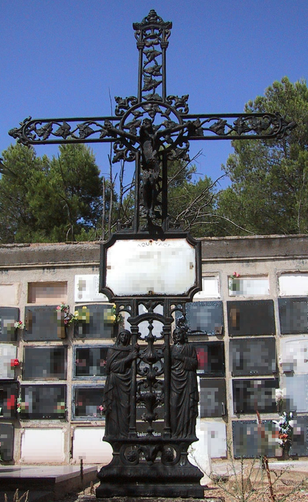
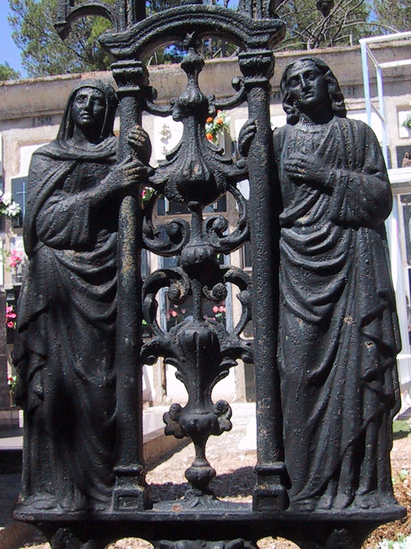
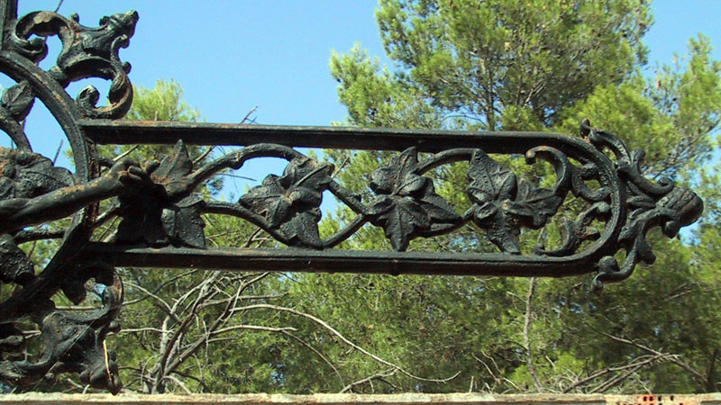
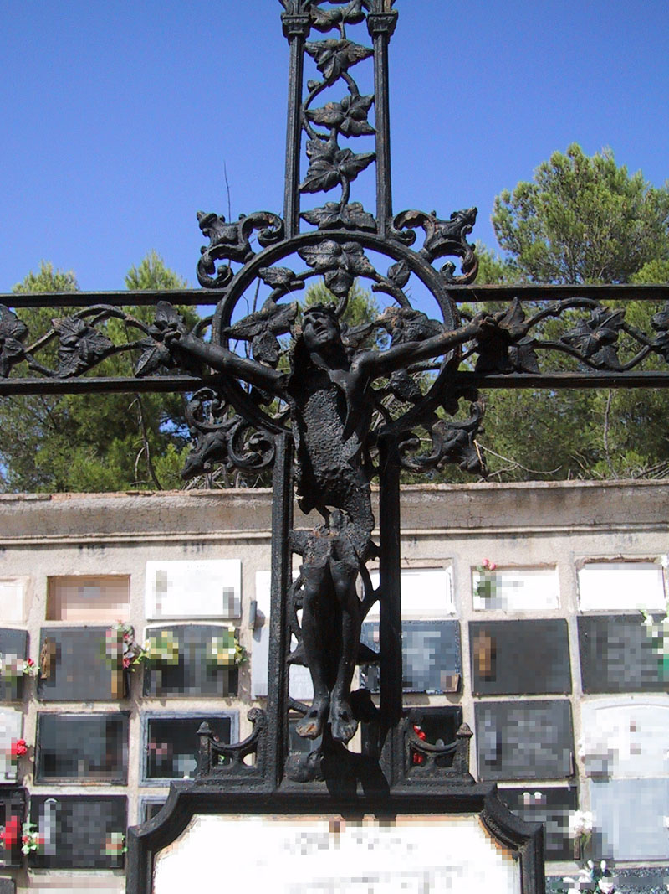
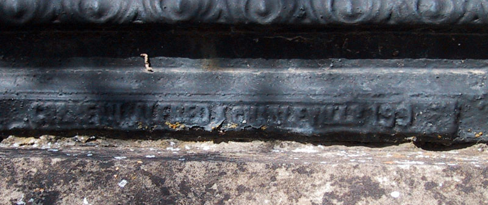

En esta ocasión he elegido una magnífica cruz de fundición de origen francés que podría datar de la década de 1880. Está situada en la zona de los eclesiásticos, en la calle de San Diego y a la derecha de la capilla. Es una cruz latina de grandes dimensiones (200x120 cm.) con base maciza de molduración corrida sobre la que aparecen dos pequeñas peanas y, entre ellas, roleos muy carnosos. Sobre las peanas se encuentran imágenes de cuerpo entero de la Virgen y San Juan, abrazados a sendas columnillas de capitel vegetal que soportan una estructura en arco dintel con arco muy rebajado. Entre ambos aparece un panel de candelieri calado, con vasos y pequeños roleos simétricos, de gran detallismo y calidad.

Ambas figuras se ajustan a la iconografía tradicional. La Virgen viste túnica de amplias mangas y manto, y cubre su cabeza con toca. Está abrazada con ambas manos a la columnilla y presenta la pierna izquierda ligeramente flexionada. San Juan es un hombre joven, de cabellos largos y ondulados, que también viste túnica y manto. Apoya la mano derecha en la columna y acerca la izquierda al pecho. En ambos casos el tratamiento de los paños es correcto, resuelto con pliegues paralelos y marcados, estableciendo diferencias entre el plegado paralelo y estático de la túnica y los pliegues dinámicos y curvilíneos del manto, más profundos y en zigzag en la zona exterior de las figuras. Los rasgos de ambos son idealizados, clásicos, y las figuras forman una composición clara y simétrica. La parte trasera de las figuras también está trabajada con un tratamiento de paños a base de pliegues verticales paralelos y poco marcados. Aunque su apariencia es la de un bulto redondo, las figuras son planas y están tratadas como un relieve.

Sobre las dos imágenes, arcos rampantes definen el espacio para la placa identificativa, rectangular de vértices cóncavos. A partir de este punto la cruz, de brazos calados, se decora con ramas de enredadera muy naturalistas y termina en forma semicircular con una pequeña piña entre roleos en el extremo. El brazo superior es diferente ya que presenta un arquillo de medio punto sobre columnillas de capitel vegetal. Sobre los capiteles encontramos nuevos soportes muy esbeltos y flanqueados por volutas en la parte exterior, que sustentan una estructura en arco-dintel con arco muy rebajado. En el extremo del brazo aparece un diminuto vaso entre roleos y un círculo central con hojas.

El centro de la cruz está remarcado por un círculo decorado interiormente con una rama de enredadera y, al exterior, entre los brazos de la cruz, con parejas de roleos que surgen de una pequeña poma y están separados por un vaso de remate apuntado. El centro del círculo se hace coincidir con una imagen de bulto redondo de Jesús crucificado, sin cruz. Se trata de un Cristo de cuatro clavos, vivo, de cuerpo sinuoso y que gira la cabeza para mirar al cielo con expresión de súplica. Es una figura de gran calidad, de estudio anatómico muy cuidado y gran fuerza expresiva a pesar de su pequeño tamaño.

En la base de la cruz encontramos la marca del fundidor: "CORNEAU ALFRED A CHARLEVILLE 199". La empresa Corneau frères o Usines du Petit-Bois fue fundada en 1860 en la localidad francesa de Charleville por los hermanos Alfred y Émile Corneau, aunque fue dirigida por el primero hasta su muerte en 1886, cuando la dirección recayó en sus yernos. La presencia de cruces francesas en el cementerio de La Planilla no es excepcional puesto que conservamos 34 ejemplares de siete modelos diferentes. Su alta calidad y éxito propiciaron la copia de los modelos por parte de fundiciones españolas, que las comercializaron hasta la década de 1960.

Estas piezas, que formaban parte del catálogo de la empresa como demuestra el número en la inscripción, podrían adquirirse directamente aunque era más habitual encargarlas a través de un intermediario: una empresa de pompas fúnebres o un representante. Así, por ejemplo, en el comercio de Carlos Redal (calle Santiago nº 5), podía encontrarse, a tenor de la publicidad de la época (1891), gran número de “cruces de hierro para cementerios con lápidas de hierro esmaltado y la inscripción que se desee”. Las cruces eran enviadas por ferrocarril y montadas en la sepultura por un herrero y un cantero, encargados de encajar los espigones de hierro de la base de la cruz en un pedestal de piedra, sellándolos con plomo fundido.
El estado de conservación de esta cruz es bueno salvo la imagen del crucificado, incompleta. La existencia de una cruz muy similar en el cementerio de Arnedo sin esta imagen permite pensar que el crucificado no forma parte de la cruz original sino que fue añadido por el empresario o el cliente.